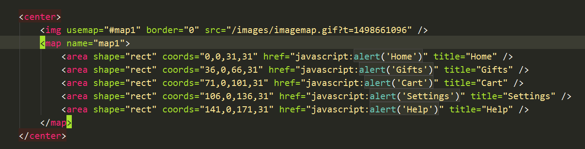
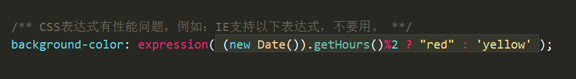
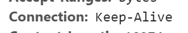
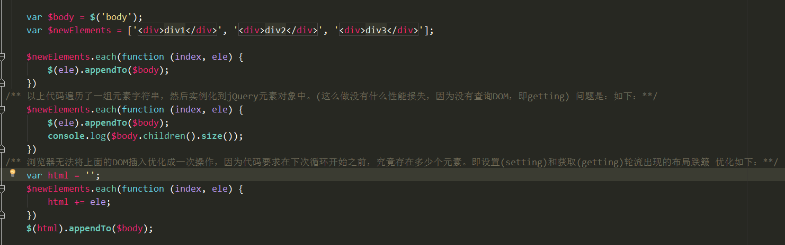
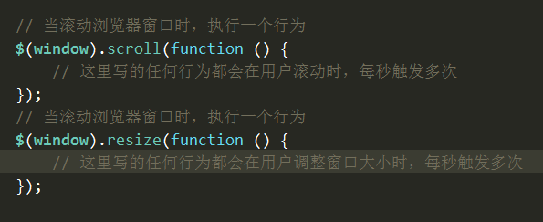
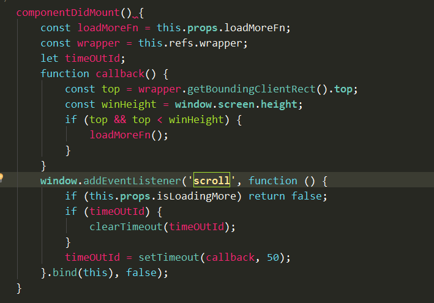

一、减少HTTP请求：1图片地图 

二、使用内容发布网络（cdn）
- 据统计：只有10%-20%的最终用户响应时间花在下载HTML文档上，其余80%-90%的时间花在下载页面中的所有组件上。
- CDN是一组分布在多个不同地理位置的web服务器，它会选择最短响应时间的服务器。
三、添加Expire头、Catch-control
- Expire头: https://www.taobao.com/ 网站 Response Headers 下的 expires:Fri, 29 Jun 2018 15:43:44 GMT
- Expire使用一个特定的时间，要求服务器和客户端的时钟严格同步。另外，过期时间需要经常检查，过期时间到了还需要在服务器中配置一个新的日期。
- Catch-control：http://www.163.com/ 网站 Response Headers 下的 Cache-Control:max-age=5184000
- HTTP1.1中Catch-control使用max-age指令指定组件被缓冲多久，比如:未来1年，以秒为单位的时间。
- Expire和Catch-control可以同时指定。如果不支持http1.1，则使用添加Expire，否则Catch-control覆盖Expire。
四、压缩组件（脚本、样式表）― Gzip
- 效果示例：https://bbs.dji.com/
- 当浏览器通过代理来发送请求时，情况就变得复杂了。
- 假设针对某个URL发送到代理的第一个请求来自于一个不支持Gzip的浏览器。这是到达代理的第一个请求，因此缓冲为空。
- 代理会将请求发送到web服务器。此时服务器的响应是未经过压缩的，这个没有压缩的响应被代理服务器缓冲并发给浏览器。
- 假设另外一个浏览器发送的第二个请求是同一个URL，并且该浏览器支持Gzip，代理会使用缓冲中(未经压缩)的内容进行响应。失去了压缩的机会。
- 如果顺序反了，第一个请求来自支持Gzip的浏览器，而第二个请求来自一个不支持Gzip的浏览器，情况就严重了，该浏览器无法解压。
- 解决办法：在web服务器的响应中添加Vary头―Response Headers下的 vary:Accept-Encoding
五、将样式表放在顶部
- 将样式表放在页面底部会导致在浏览器中阻止页面逐步呈现。
- 为避免当样式变化时重绘页面中的元素，浏览器会阻塞页面逐步呈现，导致白屏或者闪烁。
六、将脚本放在底部
- 将JS文件放在底部，页面既可以逐步呈现，也可以提高下载的并行度。
- 原因一：脚本可能使用document.write来修改内容，因此浏览器会等待，以确保页面能够恰当的布局。
- 原因二：脚本阻塞并行下载的另外一个原因是为了保证脚本能够按照正确的顺序执行，比如后边的脚本依赖前边的脚本。
七、避免CSS表达式

九、通过使用 Keep-Alive 和较少的域名来减少 DNS 查找
-
Keep-Alive 并不是HTTP1.1 所必须的，但很多浏览器和服务器都包含它。
- HTTP构建在TCP之上。在HTTP的早期实现中，每个HTTP请求都打开一个socket连接。这样做效率很低，因为一个页面中很多HTTP请求都指向同一服务器。
- 例如：很多为Web页面中的图片发起的请求都指向一个通用的图片服务器。
- 持久连接的引入解决了多对一请求服务器导致的socket连接低效性的问题。它使浏览器在一个单独的连接上进行多次请求。
- 请求头和响应头使用Connection来指出对 Keep-Alive 的支持。
十、精简 JavaScript 源代码
- 精简：移除注释、空白字符
-
混淆：也会移除注释和空白。函数和变量的名字被转化为更短的字符串。
- 由于混淆更加复杂，混淆过程很有可能引入错误。
- 由于混淆会改变JavaScript符号，因此需要对任何不能改变的符号，比如API函数进行标记，防止混淆器修改它们。
-
工具：skrinksafe
- skrinksafe 移除了大部分空白。
- 同时缩短了变量名。
- 支持合并文件。
- 使用网址：http://shrinksafe.dojotoolkit.org/
- 工具：Koala
十二、删除重复脚本
十四、使用Ajax 可缓冲
十六、批量添加DOM

十七、避免影响临近元素
-
问题：
- 设置一个元素的尺寸时，经常会影响附近元素的定位。
- 例：有一个嵌入在父元素中的子元素，父元素的width和height都是auto。设置子元素的动画时，父元素的尺寸也会发生改变，从而确保将子元素包裹住。
- 实际上，子元素并不是唯一被设置动画的元素，如它的父元素的尺寸也被设置了动画。如果发生在动画循环里边，那浏览器在每次循环时做的工作更多了。
-
优化：
- 有很多CSS属性，一经改变就会造成临近元素尺寸进行调整，如：top、right、bottom、left、margin、padding、border、width、height等
- 这种可以避免影响到临近元素的解决办法是：尽可能设置CSS的 transform属性(translateX、translateY、scaleX、scaleY、rotateZ、rotateX、rotateY)的动画。
- transform属性的特殊之处，在于它们将目标元素提升至一个单独的层，这个层可以独立于页面其他内容单独渲染。例如：
十八、不使用持续响应滚动(scroll)和调整大小(resize)事件


十九、减少图片渲染
-
问题：
- 视屏和图片是多媒体元素类型，浏览器需要加倍努力渲染才行。
- 要计算 非多媒体 元素的尺寸浏览器很轻松，但是多媒体元素包含成千上万的像素数据，要改变它们的大小、尺寸或重新合成，浏览器开销很大。
-
优化：
- 不幸的是：除了尽可能把简单的、基于图形的图片转化成SVG元素以外，就没有任何办法可以将多媒体内容重构成更快的元素类型。
- 因此：唯一可行的性能优化做法就是减少在页面上 同时显示 和 同时设置 动画 的多媒体元素 总数。
-
因此：有两种最佳实践：
- 如果感觉在页面上添加不添加图片无所谓，那么不添加。渲染的图片越少，性能越好。
- 如果同时加载很多图片进入视图，考虑不要设置这些图片的动画，或者只是简单的从 图片的 不可见到可见。这种视觉效果可能不好，弥补这一点，可以考虑错开切换可见性的时间，使图片一个接一个显示而不是同时显示，这样往往会产生更精致的动效。